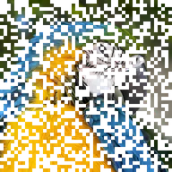

Розчинення

Прибирає з шару випадкові пікселі або блоки. Анімуйте «Силу» для переходу-розчинення; «Зерно» обирає візерунок, а «Розмір» задає розмір кожної цяточки.
Розчинення прибирає з шару випадкові цяточки. Анімуйте Силу від 0 до 1 для переходу-розчинення. Розмір — розмір кожної цяточки, а Зерно вибирає візерунок.
Налаштування
| Налаштування | Тип | Діапазон | Типово |
|---|---|---|---|
| Сила | Число | від 0 до 1 | 0.75 |
| Зерно | Число | від 0 до 5 | 0 |
| Розмір | Число | від 1 до 200 | 1 |